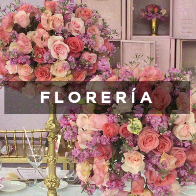
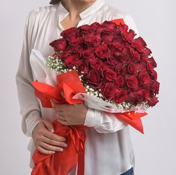

FRANCIA GRANADOS PEREZ TIS 3°A
17/08/20 MODIFICADO
LAS 2 MEJORES FLORES PARA REGALAR

Aunque muchas personas creen que las flores son un detalle solamente para tener con nuestros seres queridos cuando llega una fecha señalda, lo cierto es que cualqueir día del año podemos encontrar un buen motivo para regalar flores. Y además solemos caer en el error de regalar siempre el mismo tipo de flores, sin tener en cuenta siquiera sin son apropiadas para la ocasión, sin pensar en el mensaje que transmiten y sin preguntarnos si a la persona a la que se las enviamos le agradarán. Por eso, hoy en Flores4you queremos orientarte un poco y, si no sabes muy bien cómo elegir, siempre podrás decantarte por el tipo de flores que te mostramos a continuación, ya que por lo general gustan a todo el mundo, por lo que siempre acertarás.
1. ROSAS
ELas rosas son siempre un acierto cuando queremos regalar flores a nuestra pareja o a nuestra madre. Consideradas por muchos como las más bellas de todas las flores. Pero además, desprenden un agradable aroma que las hace destacar por encima de todas las demás. Si son para tu pareja, nada mejor que un precioso ramo de rosas rojas, ya que simbolizan el amor apasionado. Pero si quieres mandárselas a tu madre, por ejemplo, nada mejor que las rosas rosadas. Y si estás buscando algo más original, te recomendamos las rosas naranjas, que expresan elegancia y naturalidad.
Al igual que los tulipanes, las rosas llegaron a Europa desde Oriente en en el siglo VIII, a través de Al-Ándalus, de la mano de la población árabe. Los jardineros de esta cultura crearn numerosa variaciones con tamaños y colores extraordinarios, tanto de tallo largo como otras más pequeñas.

2. TULIPANES
Los tulipanes son una de las mejroes flores para regalar si estamos realmente enamorados de una persona, pues nos ayudarán a demostrarle nuestros sentimientos. Perfectos para todas aquellas ocasiones en la que buscamos algo muy especial. Si quieres decirle que es lo mejor que te ha pasado en vida y lo mucho que la valoras, nada mejor que los tulipanes rojos. Pero si lo que deseas decirle es que estarás con ella para siempre y que le serás siempre fiel, una combinación de tulipanes blancos y rosas es una magnífica elección.
Eclipsado por las rosa, el tulipán no vivió su época dorada hasta el siglo XVI, cuando despertaría con toda su fuerza el interés de Centroeuropa. Fue en esta época cuando empezó a cultivarse de masivamente, especialmente en Holanda, cuyos extensos campos de colores siempre nos vienen a la mente cuando pensamos en este país.